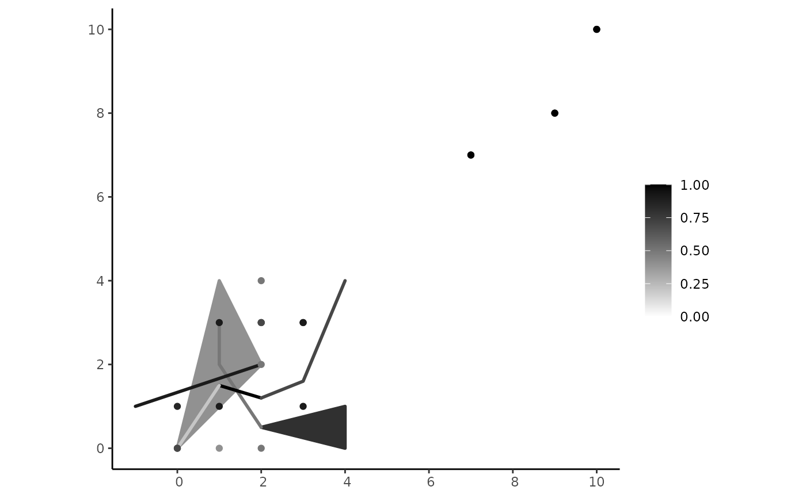

spa_flatten() gathers all the objects of a plateau collection object and
reorganizes them into a single flattened spatial plateau object containing a quadruple
(PLATEAUPOINT, PLATEAULINE, PLATEAUREGION, PLATEAUCOMPOSITION) that preserves the identity of sub-objects.
Value
A pcollection object consisting of a quadruple (PLATEAUPOINT, PLATEAULINE, PLATEAUREGION, PLATEAUCOMPOSITION).
Details
The spa_flatten() function yields a single flattened spatial plateau object, aggregating all spatial plateau objects by their types.
In the case of a two-level hierarchy, i.e., a plateau collection inside another one,
the function is applied recursively in the lower levels until the quadruple is built. Hence, it simplifies the representation of complex plateau collection objects.
The t-conorm considered in the aggregation is the max operator.
Examples
# Point components
pcp1 <- create_component("POINT(0 0)", 0.3)
pcp2 <- create_component("MULTIPOINT((2 2), (2 4), (2 0))", 0.5)
pcp3 <- create_component("MULTIPOINT((1 1), (3 1), (1 3), (3 3))", 0.9)
pcp4 <- create_component("MULTIPOINT((10 10), (9 8), (7 7))", 1)
pcp5 <- create_component("MULTIPOINT((0 0), (2 3))", 0.7)
pcp6 <- create_component("MULTIPOINT((0 1), (3 3))", 0.85)
pcp7 <- create_component("MULTIPOINT((1 0), (2 3))", 0.4)
# Line components
lcp1 <- create_component("LINESTRING(0 0, 1 1.5)", 0.2)
lcp2 <- create_component("LINESTRING(1 3, 1 2, 2 0.5)", 0.5)
lcp3 <- create_component("LINESTRING(2 1.2, 3 1.6, 4 4)", 0.7)
lcp4 <- create_component("LINESTRING(1 1.5, 2 1.2)", 1.0)
lcp5 <- create_component("LINESTRING(-1 1, 2 2)", 0.9)
# Polygon components
rcp1 <- create_component("POLYGON((0 0, 1 4, 2 2, 0 0))", 0.4)
rcp2 <- create_component("POLYGON((2 0.5, 4 1, 4 0, 2 0.5))", 0.8)
# Creating plateau point objects
ppoint1 <- create_pgeometry(list(pcp1, pcp2, pcp3), "PLATEAUPOINT")
ppoint2 <- create_pgeometry(list(pcp4, pcp5), "PLATEAUPOINT")
ppoint3 <- create_pgeometry(list(pcp4, pcp5), "PLATEAUPOINT")
ppoint4 <- create_pgeometry(list(pcp6, pcp7), "PLATEAUPOINT")
# Creating plateau line objects
pline1 <- create_pgeometry(list(lcp1, lcp3), "PLATEAULINE")
pline2 <- create_pgeometry(list(lcp2, lcp4), "PLATEAULINE")
pline3 <- create_pgeometry(list(lcp5), "PLATEAULINE")
# Creating a plateau region objects
pregion <- create_pgeometry(list(rcp1, rcp2), "PLATEAUREGION")
# Creating a plateau composition object
pcomposition <- create_pgeometry(list(ppoint4, pline3), "PLATEAUCOMPOSITION")
# Creating plateau collection objects
pcol1 <- create_pgeometry(list(ppoint1, ppoint2, ppoint3, pline1), "PLATEAUCOLLECTION")
pcol2 <- create_pgeometry(list(pline2, pregion, pcomposition, pcol1), "PLATEAUCOLLECTION")
# \dontrun{
pcol2
#> [1] "PLATEAUCOLLECTION (PLATEAULINE ((LINESTRING (1 3, 1 2, 2 0.5), 0.5), (LINESTRING (1 1.5, 2 1.2), 1)), PLATEAUREGION ((POLYGON ((0 0, 1 4, 2 2, 0 0)), 0.4), (POLYGON ((2 0.5, 4 1, 4 0, 2 0.5)), 0.8)), PLATEAUCOMPOSITION (PLATEAUPOINT ((MULTIPOINT ((1 0), (2 3)), 0.4), (MULTIPOINT ((0 1), (3 3)), 0.85)), PLATEAULINE ((LINESTRING (-1 1, 2 2), 0.9)), PLATEAUREGION EMPTY), PLATEAUCOLLECTION (PLATEAUPOINT ((POINT (0 0), 0.3), (MULTIPOINT ((2 2), (2 4), (2 0)), 0.5), (MULTIPOINT ((1 1), (3 1), (1 3), (3 3)), 0.9)), PLATEAUPOINT ((MULTIPOINT ((0 0), (2 3)), 0.7), (MULTIPOINT ((10 10), (9 8), (7 7)), 1)), PLATEAUPOINT ((MULTIPOINT ((0 0), (2 3)), 0.7), (MULTIPOINT ((10 10), (9 8), (7 7)), 1)), PLATEAULINE ((LINESTRING (0 0, 1 1.5), 0.2), (LINESTRING (2 1.2, 3 1.6, 4 4), 0.7))))"
plot(pcol2)

flatten_col <- spa_flatten(pcol2)
flatten_col
#> [1] "PLATEAUCOLLECTION (PLATEAUPOINT ((MULTIPOINT ((2 0), (2 2), (2 4)), 0.5), (MULTIPOINT ((0 0), (2 3)), 0.7), (MULTIPOINT ((1 1), (1 3), (3 1), (3 3)), 0.9), (MULTIPOINT ((7 7), (9 8), (10 10)), 1)), PLATEAULINE ((LINESTRING (0 0, 1 1.5), 0.2), (LINESTRING (1 3, 1 2, 2 0.5), 0.5), (LINESTRING (2 1.2, 3 1.6, 4 4), 0.7), (LINESTRING (1 1.5, 2 1.2), 1)), PLATEAUREGION ((POLYGON ((0 0, 1 4, 2 2, 0 0)), 0.4), (POLYGON ((2 0.5, 4 1, 4 0, 2 0.5)), 0.8)), PLATEAUCOMPOSITION (PLATEAUPOINT ((MULTIPOINT ((1 0), (2 3)), 0.4), (MULTIPOINT ((0 1), (3 3)), 0.85)), PLATEAULINE ((LINESTRING (-1 1, 2 2), 0.9)), PLATEAUREGION EMPTY))"
plot(flatten_col)
# }